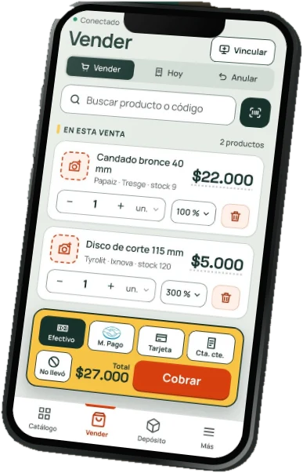

Vendé, contá y cobrá desde el mostrador o el depósito.
El sistema del mostrador
Precios al día,
ventas y stock
de la ferretería.
Ferrebress es el sistema del mostrador: se usa desde el celular y desde la computadora, con los mismos datos.
- Buscás el producto,
decís el precio y cobrás. - Los precios se actualizan
con las listas de los proveedores. - Lo que se vende baja del stock;
lo que se compra, sube.

Esta computadora En línea
Entrá con tu celular
La forma más rápidaEntra con tu usuario, sin contraseñas, usando tu huella.
Tu sesión se cerró desde otro dispositivoEntrá de nuevo para seguir donde estabas.
Cambia en 1:00 y sirve una vez
- Apuntá el celular a este códigoCon la cámara o con «Escanear» en la entrada de Ferrebress.
- Poné la huella en el celularEsta pantalla entra sola. Si el celular no tiene la sesión abierta, entrás ahí con Google o con la huella.
Solo entran las personas que un Administrador del negocio autorizó. Si es tu primera vez, pedile que agregue tu correo de Google.
Sin contraseñas. Entrá de forma simple y segura.
Tus datos están protegidos
- Una vez dentro, resiste
cortes de internet - Busca productos
por código de barras - Maneja la computadora
desde el celular
- Vendémás rápido
- Controlátu stock
- Hacé crecertu negocio